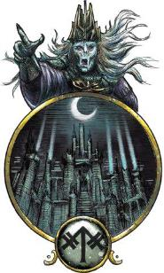
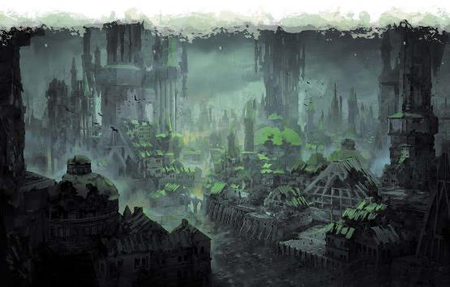

Exploring_Eberron
P177~182 Marbar
原文基于July 2020. PDF Version: 1.03.
翻译by Pany_Q（翻译版本：2020年12月08日）
翻译说明：
关于不灭者(Immortal)和不朽生物(Deathless)，
不灭者(Immortal)是与凡俗生物(MortaL)相对的概念。在本章中，不灭者是其出身位面的某方面概念的体现。他们的数量是恒定的，一旦一个不灭者死亡，就会立刻诞生一个新的来填补空缺。而凡俗生物，同物质位面艾伯伦的其他凡俗生物一样，会出生、繁殖、死亡，会演化和改变，其总数也没有限定。
不朽生物(Deathless)是艾伯伦的艾伦诺精灵研究出来的正能量版本不死生物，是个种族种类(Type)。在艾伯伦设定中，驱动不死生物的能量来自玛伯尔位面（永恒黑夜）；而艾伦诺精灵为了保存他们中的杰出祖先，研究出了利用来自伊瑞安位面（永恒黎明）的正能量驱动的不朽生物。
在5e怪物图鉴中，有将Immortal译为不朽的，但是与艾伯伦特有的不朽生物(Deathless)撞了，我这边就把Immortal改为不灭者了。

一片液态阴影的海洋拍打着黑沙和玄武岩峭壁。一颗头骨半埋在沙中，空洞的眼眶凝视着翻滚的浓雾。骨头并没有被阳光曝晒，因为这里原本就没有太阳――这里有的，只是挂在天空中的烟灰色月亮发出的忽明忽灭的微光。
早期研究玛伯尔相关报告的学者认为，它是“黑暗的位面”，这种纯粹物理意义上的黑暗就是定义它的概念。然而事实上，该位面的永恒的幽暗只是其真实性质的一种表象。即使是最明亮的白天，最终也会在黑暗中结束――玛伯尔就体现了这一理念。它是觊觎光明的阴影，耐心地等待着吞噬每一座光明的孤岛。它是熵，是绝望，是失落。这里不是生者的灵魂在死后的去处，而是象征死亡概念本身的位面――它是吞噬光明和生命的饕餮。
玛伯尔是负能量的来源，也是大多数不死生物的起源。与玛伯尔相关联的显能区域――以及大部分不死生物――都会消耗其周围环境的生命力。然而，有些人认为，负能量本身只是一种工具，而玛伯尔的力量是可以被利用来做有益处的事情的。
永恒黑夜吞噬生命和光明。这里是黯蚀能量的源泉，光明被幽暗吞噬，毫无防备的生物会迅速死亡。玛伯尔具有以下位面共通特性。
黯蚀之力(Necrotic Power)：生物在抵抗死灵法术的豁免检定中具有劣势。不死生物的每个生命骰都给予额外2点生命值，且在抵抗驱散和恐慌的豁免检定中具有优势。
光耀虚空(Radiant Void)：生物若要施放一个造成光耀伤害或恢复生命值的法术，必须先通过一个DC为10+法术的环级的施法属性检定。若检定失败，法术不会被施放，法术位也不会被消耗，但该动作视作已使用。
永恒阴影(Eternal Shadows)：玛伯尔中不存在明亮光照。任何通常会产生明亮光照的物体或效果都只会产生微光光照。
玛伯尔之餮(The Hunger of Mabar)：玛伯尔会吞噬活物的生命力。任何活物在玛伯尔每度过1分钟，就会受到10d6点黯蚀伤害。如果这个伤害使生物的生命值降低到0，该生物就会立即死亡，身体粉碎成灰。玛伯尔的原住民、对黯蚀伤害有抗性或免疫的生物，以及处在防死结界法术效果下的生物都不受该特性效果的影响。
标准时间(Standard Time)：时间流逝的速度与物质位面的相同，并且在其各个位层(layers)中也是一致的。
位面之间通常不会相互影响。撒法拉斯的军队无休止地相互战斗，但他们不会去围攻瑟瑞奥特。每一个位面都是孤立的，是某一种特定概念的完美体现。但玛伯尔所体现的概念，是吞噬一切光明和生命的饥渴，是万物不可避免的衰亡。当适当的力量汇合到正确的位置，玛伯尔会将来自其他位面的碎片(fragments)拉入永恒黑夜之中；这些碎片随着时间的推移，光明和希望被抽干，最终转化为玛伯尔的新的位层。
最初，这些被俘获的位面碎片会成为黑夜边境(the Hinterlands)的一部分，夜幕降临于此，但它们此时还不具备玛伯尔的任何位面共通特性。随着时间的推移，碎片的原位面特性会被玛伯尔的特性所取代。一旦碎片获得了最后一个特性“玛伯尔之餮”，它就会被永恒黑夜完全同化，成为熵和绝望的新的象征。碎片中的凡俗居民通常会转化为幽影(Shadow)或其他形式的不死生物，而不灭者可能会变成尤格罗斯魔(yugoloths)，或被扭曲成徒有他们曾经自我的外表的黑暗仿造品。转化是缓慢而不可避免的，玛伯尔的黑暗统主在这个过程中不必采取任何行动――虽然如此，他们中的大多数依然喜欢折磨碎片。不死生物在被白骨国王(Bone King)所围困的碎片边缘捕食，尤格罗斯士兵在被阴影女皇(Empress of Shadow)占领的碎片掠袭肆虐。
漂流书堡(the Drifting Citadel)，就是一个典型的被转化的碎片。这座浮空塔曾经是西拉尼亚(Syrania)的一座图书馆。现在它漂流在冰冷的虚空中，宏伟的窗户都已破碎，书籍从书架上撒落一地。贤者们的幽影用虚无缥缈的手指攥抓着书本，却永远也无法翻过一页。原是天使的图书管理员已经变成了饱受折磨的精魂，�k们渴求着知识，会从任何不幸落入他们手中的生物身上吸取记忆。
有时，其他位面的强者们会试图阻止玛伯尔捕获其他位面的碎片――但无济于事。黑暗无法被阻止，因为它是现实的运转规律的一部分――永恒黑夜会吞噬，碎片一去不复返。你可以在被拉入黑暗中的过程中挣扎，但最终的结果是无法避免的。如果不是伊瑞安的存在，玛伯尔最终会吞噬一切。但正如黑夜会吞噬，黎明会恢复，所以平衡最终得以维持。
吞噬的过程是缓慢而持续的，黑夜边境中总是同时存在多个碎片。玛伯尔可能需要数月、数年甚至数百年的时间来吞噬完一个碎片。随着位面特性被替换，碎片的景观也会随之改变，以反映出它的变化。在一个曾经是拉玛尼亚碎片中，靠近边界的植被开始枯萎。生物变得病怏怏的，图腾可能完全不见了，也可能变成了只是行走就会杀死脚下的草地的恐怖幽影
玛伯尔通常以其他位面为目标，但它也会从物质位面夺取碎片。这个效果乍看起来让人联想到哀伤故地：灰色的迷雾在被夺区域上空翻滚，所有陷入迷雾中的东西都会消失。然而，玛伯尔往往只会占领一个城镇大小的地方，或者可能是一个县，它从来没有占领过一整个国家这么大的范围。通常雾气会在一天之内消散，留下一片没有植被或建筑的荒芜区域。玛伯尔的力量还会造成这样的效果：它也会吞噬关于这个地方的记忆；大多数凡俗生物都会忘记被夺走的地方曾经是什么，在他们的记忆中这地方一直都是荒芜的样子，并且在这个过程中人们也会忘记被吞噬的人。这个过程并不完美，也不绝对；只是当矛盾的信息出现时，人们会本能地试图将其合理化。也许他们听过关于某个失落小镇的故事？住在那个小镇上的那个叔叔呢？他不是死在战争中了吗？总之，玩家角色可能会意识到有些事情不对劲，但却无法说服别人。正由于这种使人遗忘的魔法效果的存在，再加上这种情况发生的稀少几率，使得玛伯尔的这一面并不为科瓦雷的普通人所知晓。但如果是一群意志坚强的玩家角色来调查开拓地丢失之谜，他们也许就能发现这其中的奥秘。
从由凡俗灵魂变成的幽影，到玛伯尔的黑暗统主，永恒黑夜的居民们都是黑暗、绝望和死亡这些概念的体现。玛伯尔位面的居民大致可分为以下五类。
幽影(Shadows)是玛伯尔最常见的居民。这些有部分自我意识的精魂徘徊在原本应该有人的地方，孤独、无声地模仿着已不在的居民的角色。你会在玛伯尔某个街道的拐角处看到玩耍着的孩子们的幽影，还会在某个破碎的神殿里看到某个一个牧师的幽影向某个已不在的、不知名的神祈祷。多里乌斯・阿莱尔・ir’柯兰(Dorius Alyre ir’Korran)在他的《位面书典》(Planar Codex)中称，每一个凡俗生物在玛伯尔都有一个幽影，就像撒法拉斯的征兵(conscripts)一样；这一理论得到了永恒之城(Amaranthine City)的幽影园丁们(shadow-gardeners)的支持。不过，玛伯尔的幽影们不会说话，它们是由冲动和本能驱使的；如果把它们真的是和活物联系在一起的，它们也只是那个灵魂的黑暗片断罢了。幽影们渴望凡俗生物的生命力，不过它们会无视对黯蚀伤害有抗性或免疫的生物，以及处于防死结界法术保护下的生物。
大多数玛伯尔的幽影都使用《怪物图鉴》中的幽影的数据，不过特别强的幽影可以使用缚灵(wraiths)或幽灵(specters)的数据。
玛伯尔的不灭者是从黑暗诞生的精魂。在这以永恒之城为中心的庞大帝国中，由饥饿、绝望和死亡化身而成的尤格罗斯魔构成了其公民，且大多担任了士兵之职。在黑夜边境，尤格罗斯魔与被困在这些厄运已定的碎片中的天界生物和邪魔战斗着，直到这些碎片最终被完全吸干、同化，而其中的不灭者居民们也被转化成更适合于永恒黑夜的形态。至于这些战斗是否真的能加快同化的速度，抑或这只是尤格罗斯魔打发时间的一种方式，仍是存疑的话题。如果没有别的不灭者可与之为战，尤格罗斯魔就会散播绝望；欧诺罗斯魔(oinoloth)可能会在某个物质位面的碎片中传播瘟疫，然后花一年时间来观察结果。
有些尤格罗斯魔是园丁，但�k们所栽培的是幽影。通过塑造一个凡俗生物的幽影，邪魔可以让这个凡俗生物充满绝望，或者将他们推向黑暗的道路。当与幽影相连的凡人最终死亡时，尤格罗斯魔能够将该幽影精炼成影髓(quintessence)；这是一种尤格罗斯魔艺术家和工匠们可用来制作工具和武器的物质，如果这些东西流入凡俗生物的世界，就能够招致死亡和绝望。虽然大多数园丁都从事栽培幽影的事业，也有些园丁会进入黑夜边境的碎片中，以缓慢而微妙的方式直接折磨那里的位面囚俘(hostages)。还有些尤格罗斯魔则是哲学家和先知，�k们思考熵的本质和万物终结的方式。另外还有些则在永恒之城担任日常性的职务。
玛伯尔的不灭者中，尤格罗斯魔占了大多数，但也有其他的。玛伯尔梦魇(incubi)和魅魔(succubi)象征着情感的痛苦和失落。��们中有些在碎片中折磨位面囚俘，另一些则与尤格罗斯魔共生，并在后者身上施展�k们的奸佞诡计――对�k们来说，邪魔的痛苦与凡俗生物的痛苦一样美味可口。还有些梦魇和魅魔是园丁，有人认为��们可以通过折磨幽影来榨干相对应的凡俗生物心中的爱。除此之外，还有其他随位面碎片而来、进而被无尽之夜转化重塑的不灭者――天使和恶魔。
不死生物UNDEAD
大多数不死生物源自于玛伯尔。当濒死生物的灵魂被束缚于玛伯尔、而不是去往杜鲁尔时，拥有自我意识的不死生物就会诞生。玛伯尔的能量维持着该生物活动，而该生物则充当通向永恒黑夜的通道――无论是缚灵(wraith)、木乃伊(mummy)还是吸血鬼(vampire)，都是如此。这就是为什么许多不死生物会直接吞噬其他生物的生命力。即使不直接吞噬生命力，不死生物的存在本身就能消耗世界中的生命；这就是为什么在不死生物频繁出没的地区植物经常枯萎的原因。同样的，拥有心智的不死生物会因这种与玛伯尔的联系而受到腐蚀，从而被拉向邪恶阵营。即使是生前善良的人也会发现，玛伯尔会侵蚀他们的怜悯和同理心――当你的存在被束缚于永恒黑夜时，要想保持你的人性是一件很困难的事情。
玛伯尔也有很多本土的不死生物。其中很多只是象征玛伯尔本质的显能现象(manifestation)，而不是真的由死去凡俗生物变成的。白骨国王的无尽骷髅大军就是显能现象，而白骨国王本人很可能从来就不曾是凡俗生物。幽灵(specters)和缚灵其实是格外强大的幽影，有些是园丁栽培的成果，而有些则是从玛伯尔的纯粹黑暗中直接涌现出来的。更为荒芜的那些位层――如终焉沙漠*，则被伏行夜影(nightwalkers)统治，他们是强大的负能量传导体；它们经常攻击碎片，以碎片的能量为食，并加速碎片的同化。
*译注，原文为”The more desolate [planes], like the [Obsidian Desert]…”这里按前后文推测应是layers和Last Desert，直接改了。若错误以后改正。
除此之外，有自我意识的不死生物的灵魂会被束缚于玛伯尔。当吸血鬼、木乃伊、巫妖(lich)或类似的生物的肉体毁灭时，它并不会得到杜鲁尔的解放；相反，其灵魂会前往玛伯尔，在这里成为一个缚灵，永远被永恒黑夜的饥饿所折磨。在这个过程中大多数灵魂都会被逼疯，但也许冒险者们会在玛伯尔再次遇到之前杀死的某个吸血鬼，现在则成为了永恒黑夜的一位幽灵领主。
玛伯尔中最强大和最凶恶的存在被称为黑暗统主。每位黑暗统主都体现着玛伯尔的一个特定方面，并统治着一片由相连的位层构成的领域(domain)。有些黑暗统主自时间伊始就是玛伯尔的一部分，而另一些则是从被永恒黑夜吞噬的碎片中崛起的。大多数黑暗统主的力量相当于至高妖精(archfey)或至高邪魔(archfiends)，且当�k们身处由自己所统治的位层时，力量更加强大。不过，�k们在玛伯尔之外的行动能力有限，只能通过邪术师或不死生物仆从来影响物质位面。本节后面会介绍艾伯伦上已知的三位黑暗统主，但还有更多潜藏在黑暗中。
黑夜边境的碎片中保存着所有在被俘虏之前就居住于此的生物。当一个凡俗生物在那里死去，他们就会以幽影或不死生物的形式回归。不灭者被束缚在�k们原本的碎片上；�k们不能离开，如果�k们死了，就会在那里重生。所以任何位面的生物都可以在这里找到，包括物质位面的。一块来自瑞西亚的碎片中可能住着霜巨人。无尽之海(Endless Ocean，拉玛尼亚的一个位层)的一块碎片中可能有一汪人鱼。但在玛伯尔停留的时间越长，这个位面就越会腐蚀碎片和其中的生物，直到后者变成幽影、不死生物，或者更可悲的东西。一个凡俗生物如果撑过了这个过程，可能会被抽干灵魂中所有的光明，或被绝望所吞噬。虽然它可能会保留原来的外表，但应该被视为异怪(aberration)；到最后，它将寻求传播痛苦，以消灭光明和生命为目标。

*译注：DMG先译为”层级”，然而看起来太像普通词，放进前后文显得不搭，故改。
玛伯尔永远被夜幕笼罩，它那黯淡的月亮西菲洛斯一直固定在天空中。虽然在其数不尽的位层中有着各不相同的场景――荒漠、城市废墟、沃土枯萎后的残骸，但所有故事的主题是相通的，那都是关于失落、熵、绝望和死亡。一个位层可能包含了一个巨大的战场，里面布满了龙和巨人的交织的骨头。骨瓮和坟冢。残破的纪念碑――其上面的名字已经褪色，无法阅读。荒芜的果园和干涸的河床。还有地下墓穴，从无名地窖到已故统治者的死后宫殿，陷阱和宝藏堆满了这些巨大的墓地。而这里是永恒黑夜，一些死去的统治者仍然在支配着他们的领土――尽管他们本身已经变成了不死生物，或是纯粹的恶意。
领域中的位层是相连的，每个领域由一位黑暗统主统治。各位层的居民和整体主题都反映了该黑暗统主的影响。所以，白骨王国的居民主要由不死生物构成，而尤格罗斯魔则居住在附属于永恒之城的位层中。有些位层有以物理屏障为边界，但大多数位层要么是无限循环的，要么边界是一圈迷雾――这与哀伤故地的死灰色迷雾并无二致，任何误入迷雾中的人都会在该位层的其他地方重新出现。在一个领域内的各位层通常通过物理形式的传送门相连接，可能是一扇巨门，或是一池阴影。要在领域之间移动需要异界传送(plane shift)或举行一个该领域特定的仪式。这些仪式不一定是魔法的，它们只是一些必须了解的秘密。如果你在白骨王国，而你想去众泪女王的领域，答案很简单：你所要做的就是真诚地哭泣，然后你的眼泪就会带你前往目的地。
下面给出三个玛伯尔的领域作为例子，每个领域都可以包含很多位层。
普遍认为，永恒之城是玛伯尔的核心。有经验的位面旅行者可能会觉得这里很令人熟悉，因为它就是伊瑞安的永恒之城的黑暗倒影。伊瑞安的永恒之城展现了这座城市初创时期的辉煌：繁华、整洁、充满了欢乐和生机。玛伯尔的永恒之城则是这种辉煌逝去后的残影。与它的同名城市一样，这座巨大的都市占据了整整一个位层，但在这里，旗帜已经褪色破损，墙壁已经开裂，喷泉已经干涸。曾经熙熙攘攘的城市如今只剩幽影在街道中徘徊。腐朽的挂毯和残缺的马赛克诉说着过去时代的奇迹和荣耀。无论是从建筑风格还是街道布局来看，两者都无可置疑地是同一座城市。这感觉就像一个宏伟帝国的最后日子，一个正在衰败的伟大奇迹；不过，在其悲惨的外表之下，依然有着巨大的力量。城墙虽然已经裂开，但依然雄伟坚固，麦泽罗斯魔(mezzoloth)那锈迹斑斑的三叉戟和打磨一新的三叉戟一样可以轻易杀死你。
这座城市的统治者，阴影女皇，是最初和最强大的黑暗统主。她的存在原则是饥饿，是吞噬一切光明的渴望，以及永远无限制地扩张她的帝国。她偏爱优雅的邪魔形态，拥有有光泽的角和刻有奥术符号的几丁质甲壳板，不过她也可以变成任何形态的尤格罗斯魔。她大部分时间都在支配着永恒之城的腐朽的繁华，但也密切监视着黑夜边境的情况，偶尔也会抽空折磨自己的位面囚俘。西拉尼亚的贤者们相信，是阴影女皇决定了哪些其他位面的碎片会被拉入玛伯尔，寻求与她谈判的位面使者们有时会暂居在永恒之城。
这座城市属于尤格罗斯魔，玛伯尔的永恒之城中每有一个尤格罗斯魔，伊瑞安的同名城市中就有一个天使，上至黎明女皇和阴影女皇也是一一对应的。很可能，这只是反映位面的核心概念――初始与终结，希望与绝望。但也有这种可能，伊瑞安和玛伯尔在某种意义上是相同的――也许黎明女皇就是阴影女皇，虽然她们看起来是同时存在的，但她们反映的是同一个精魂的初始与终结。
与永恒之城相连的所有位层都反映了它的主题：帝国的野心和衰败的权力。有些体现了绝望――一座摇摇欲坠的堡垒等待着必将摧毁它的袭击；一座被遗弃的疗养院里被困的病人们正在饿死。这些地区的居民几乎都是幽影，但邪恶的园丁有时也会给它们灌输近似的自我意识，只要符合�k们的目的。被阴影女皇占领的碎片会被拉入她的帝国，通常那里会建立一个尤格罗斯魔的前哨站，甚至在该地区的生命被抽走的时候。(译注：没看懂这句，求好心人解惑)
如果说永恒之城领域就像是一个帝国最后的日子，那么白骨王国就是它已经陷落后的样子。如果这里的位层中有一座堡垒，那它不是在为最后的战斗做准备，而是战斗已经结束后留下的残垣断壁。城门破碎，血迹和断裂的武器散落得到处都是。这个领域中的人们打了一场可怕的战争，而且输了......但这里是玛伯尔，他们的尸骨还留存着。农民的骸骨继续着他们卑微的劳作，似乎对他们的行为的徒劳无益浑然不觉。即使死了，这些平民依然受着残酷暴君的压迫。尸妖(wight)、败契者(Deathlock)和吸血鬼衍体(vampire spawn)充当着暴君的士兵。吸血鬼或木乃伊领主则从�k们的破败堡垒里发号施令。
王国所有被诅咒的贵族都臣服于白骨国王，他是死亡和腐烂的概念的化身。他是一位包裹在腐朽华服中的巫妖，他的外表就是一个警告：即使是最强大的统治者也终将化为尘土与骸骨。他偏爱从他所占领的碎片中慢慢抽走生命；他希望他的位面囚俘沉浸在即将到来的死亡中，眼睁睁看着自己的土地在面前枯萎；直到这些领主背弃他们的人民，白骨国王才会最终杀死他们。
白骨国王的数据可以以奥库斯(Orcus)为基础来表示。他可以作为邪术师的不朽异界宗主(Undying patron)，并以教授凡人如何成为巫妖的邪恶仪式而为人所熟知。对于所有以这种方式效忠于白骨国王的人，都会被授予一个白骨王国的头衔；并且他们会知道：当他们死后，他们将永远被束缚在这个王国里为国王服务。国王对这些仆人的要求不多，只要他们使用他赐予的力量杀死活人，就等同于为他提供食粮。但有时邪术师可能会被委派去消灭一个巫妖或吸血鬼，甚至是另一个邪术师――因为白骨国王希望他们尽快到他的王国来为他服务。
无星夜空下的黑色沙砾构成的沙漠――这就是玛伯尔的标志性景象之一。在终焉沙漠中，有一些曾经辉煌的遗迹：半埋在沙地中的巨型雕像的头颅露出一只已经裂开的眼睛；一块纪念墙的残骸上刻着已经无法辨识的名字；残破的建筑的废墟已无法猜测其曾经的用途。拥有历史和奥秘熟练项的角色可以意识到，这些遗迹来自于非常不同的各种文化；有些是天界生物的作品，而有些可能是希恩德瑞克的巨人的创作。
在其中心有一个巨大的陵墓宫殿。它的建筑风格带有艾伦诺特色，但其宏伟程度甚至超过死者之城(City of the Dead，艾伦诺都会)。这座堡垒属于这个领域的黑暗统主――众泪女王。众泪女王是痛苦的化身，她的臣民大多是来自荒沙的虚无缥缈的亡灵、幽影和缚灵。此外，服侍于女王麾下的还有残酷的幽灵和女妖（banshee），以及那些沉迷于充盈于此的美味苦难的魅魔和梦魇。女王的外表是一具包裹在美丽的精灵女子的幻象之下的干尸。他人的痛苦是她的蜜酒，她唯一的乐趣是缓慢地折磨她所占有的黑暗边境碎片中的囚俘。
众泪女王是黑暗统主中最年轻的一个。她曾经是一个凡人，生前追求掌握生死的力量，然而这导致了每一个她的血亲与所爱之人的死亡。她的王国被夷为平地；她为了不让自己的传承完全断绝而杀死了自己的女儿并将她变成了巫妖。她的名字是米娜拉・沃尔(Minara Vol)，是艾兰蒂丝・沃尔(Erandis Vol)的母亲。在成为黑暗统主的过程中，她忘记了自己的身份和过去的情感。她同等地憎恶精灵与龙，却连自己的女儿都忘记了。如果众泪女王以某种方式恢复了记忆，她可能会向不死评议会和阿贡尼森展开报复，或者是援助艾兰蒂丝――或者也有可能，她会无视自己的过去，继续沉浸在绝望中。
众泪女王统治的位层大多荒凉悲惨，充满了缚灵和女妖的哀嚎。其中之一是一片有精灵和龙的尸骨交织在一起的艾伦诺战场；这或许是发现关于她的过去的关键。
黑夜边境处在玛伯尔的边缘，所有位面碎片都在这里被永恒黑夜吞噬同化。一般来说，由于玛伯尔之餮特性在这里还未完全形成，造访这里比去玛伯尔的其他位层更为安全。根据碎片的原本性质和与玛伯尔融合进程不同，每块碎片所反映的玛伯尔特性也有所不同。
黑夜边境内的碎片可能有无限的多样性。这主要取决于一个碎片来自于哪个位面。是拉玛尼亚的青翠森林？是西拉尼亚的浮空塔？或者是物质位面的一块碎片――从终末战争中摘走的要塞或者是瑞依卓尔的村庄？第二个问题是这块碎片被困了多久。它还保留着多少原来的风味，它受到的玛伯尔的影响到什么程度？最后一个问题是它被哪位黑暗统主占领――理由是什么？是这个地区的什么要素使得它落入这位黑暗统主的领域？阴影女皇寻找的是那些太过耀眼的地方――那些沐浴在巅峰的光芒之中，确信他们的荣耀永远不会褪色的地方。白骨国王偏爱的碎片是那些平民遭受苦难或统治者成为暴君的地方；在他的领域里有一些坎纳斯的碎片，尽管很难判断它们离被完全同化还有多久。众泪女王寻找的是那些发生过可怕悲剧的地方，迫使居民永远沉浸在这些痛苦的时刻。对于来自外层位面(outer planes)的碎片，主要是要重新塑造这些位面来适应故事。相对的，对于物质位面来说，往往是故事本身引来了玛伯尔的魔手。
以下是玛伯尔影响物质位面的几种方式。
玛伯尔显能区域臭名昭著，几乎所有生命都避之唯恐不及，因为基本上它对其中的动植物都有害无益。在玛伯尔显能区中的生命或枯萎、死亡；或变得扭曲畸形；植物可能会变得渴求活物的血液，或者不自然地苍白、冰冷。腐败和衰朽的速度往往会加快，疾病也会四处滋生。然而，这样的地方往往也是强大的负能量来源。玛伯尔显能区域往往拥有黯蚀之力位面共通特性，而有一些传奇仪式和超凡奇械就需要玛伯尔显能区域才能运作。制造坎纳斯不死生物的的奥达基尔仪式(Odakyr Rite)就是一个例子，而坎纳斯的埃图尔城就是建立在一个玛伯尔显能区域上的。这显示了一种奇特的共效作用：如果定期地将玛伯尔显能区域的负面能量导入仪式或法术中，就能让这些不再能量传播疾病或杀死植被。乔兰・哈斯・霍兰(Jolan Hass Holan)在他的《战争与死亡：坎纳斯死灵法术史》中称，坎纳斯在战争初期遭遇的瘟疫和饥荒，正是由于其为了战略原因将寻者(Seekers，对沃尔之血信徒的称呼)赶出了平时由他们照料的显能区域才造成的――结果，后来坎纳斯为了对抗这些饥荒又不得不转而全面投靠死灵法术。
虽然玛伯尔显能区域很少作为通往玛伯尔位面的传送门，但它们是强大的负能量来源，能产生不死生物。在玛伯尔显能区中，骷髅、僵尸和食尸鬼都可以自发地产生；在适当的情况下，更强大的不死生物也能制造出来。
在玛伯尔处于相接时期的夜晚，黯蚀之力特性复盖整个世界，所有光源的半径减半。在这些时期，黑暗最深的地区可以作为玛伯尔的传送门，将幽影或其他邪恶的东西释放到世界中。这种情况主要发生在绝望或痛苦弥漫的地区，而且只在夜间发生，破晓时立刻结束。因此，在玛伯尔位面相接期间，朋友和家人们常会一起挤在室内，保持灯火通明，讲述欢快的故事。
当玛伯尔处于远离时期，所有生物对黯蚀伤害有抗性，不死生物在对抗驱散或恐慌的豁免检定中具有劣势。
一般来说，玛伯尔的相接期是在每年的瓦勒特月的最接近冬至日的三个新月之夜。五国的居民称这段时期为“长影”。玛伯尔的远离相比之下频率更低，是在每隔五年的夏至日前后的五天时间。(译注：3R时玛伯尔的相接也是五年一次的，到5e变成每年一次了呢。)
用来制作玛伯尔神器的是一种叫做影髓(quintessence)的材料，这种不反光的黑色物质是由玛伯尔的幽影凝固而成的能量体，可以像木材、金属或布一样使用。影髓物品能传导强大的死灵法术和黯蚀能量，凋零法杖、血光剑或窃命剑可以用玛伯尔影髓制作。制造不死生物或吞噬光明的物品也可以用影髓制作，这种物品会吞噬携带它们的人的快乐和同情心，而使用这种物品的人往往会变得冷酷和残忍。尤格罗斯魔工匠可以创造出拥有更强大的力量独特物品，但这些工具的目的总是传播绝望和痛苦。有些会消耗持有者的生命骰以支付它们的致命能力；有些则会使持有者在死后变成不死生物。
最强大的玛伯尔神器是战斗罗斯魔(battleloth)，这些尤格罗斯魔让自己被锻造成传播死亡和绝望的物品。这些物品拥有智能，也很强大，并且会将其持有者引向黑暗的道路。
有些植物确实能在玛伯尔显能区域生长，而它们通常是有毒的；血藤(bloodvine)可以产生各种致命的毒液。不过，血帆城邦(Bloddsail Principalitiy，拉扎尔联邦的一个地方)的精灵们已经掌握了如何在玛伯尔显能区种植的艺术，在那里，你可以找到以阴影而非阳光为食的奇妙植物――暗木树(darkwood trees)、乌莎草(ebon sedge grass)等等。在这里，他们制作出世界上独一无二的香料和葡萄酒。
玛伯尔能激发残忍和绝望。它的黯蚀能量可以成为无处不在的环境威胁，也可以被邪术师或死灵法师用作武器。这里有一些关于这个平面的故事可供探索。
哀伤故地的碎片(Fragmented Mourning)：哀伤故地不太可能是玛伯尔造成的。与大部分碎片相比，其影响范围要大得多，那种挥之不去的陌生感也不像玛伯尔，而且人们都知道它已经被摧毁了。不过，随着哀伤故地逐渐显现，赛尔的一部分完全被玛伯尔夺取了也是完全由可能的――也许米卓(Metrol，原塞尔首都)仍然存在于玛伯尔的黑夜边境的某处！ 如果是这样，它还可以挽救吗？丹内尔女王还活着吗？或者，她会不会就是为了令自己跻身黑暗统主之列而牺牲了自己的人民的罪人？
荒原上之影(Shadow on the Moor)：一队冒险者在经过一片荒原时，遭到了狼和鹰的影子的袭击。第二天天亮后，他们发现有一个角色的影子不见了，影子被落在了显能区里。他们需要回去找影子吗？如果需要，怎么找？如果不需要，不再有影子这件事对这个角色来说意味着什么？
沙德霍特村的主人(The Master of Shadholt)：一个残忍的邪术师控制着一个小村庄。当冒险者们打败了这个反派后，他们发现了一个令人不快的真相：沙德霍特村处于玛伯尔显能区域；尽管那邪术师是个恶棍，但正是他的仪式阻止了该显能区的瘟疫蔓延到整个地区。冒险者们能否帮助一位村民取代邪术师的位置，缔结契约并获得遏制威胁所需的力量？他们必须与什么样的黑暗统主打交道？
漂流书堡(The Drifting Citadel)：西拉尼亚的学者天使伊瑟瑞尔(Itheriel)联系上了冒险者们。这位天界生物想要从被玛伯尔吞噬的图书塔中找回一本知识之书。如果伊瑟瑞尔亲自去玛伯尔，�k就会永远被困在那里；因此�k需要冒险者们代为找回那本书。关于这本书，伊瑟里尔隐瞒了什么？这个曾属于天界的遗物会不会已经成为了如今的《崇恶之书》*？在这座浮空塔中还能找到什么？
*译注：Book of Vile Darkness，《崇恶之书》，这里指游戏内的artifact。威世智出版过同名资源书。